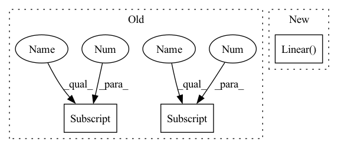

Pattern ID :1802

Before Change
channels += num_filters * tc_layers[i]
self.layers.add_module("attention_{}".format(len(att_layers)-1),
AttentionBlock(channels, att_layers[-1][0], att_layers[-1][1], device))
channels += att_layers[-1][1]
channels += additional_length
fc_layers = list(fc_layers) + [out_channels]
After Change
channels += additional_length
fc_layers = list(fc_layers) + [out_channels]
self.layers.add_module("fc_amalgamate", nn.Linear(seq_length, 1).to(device))
for i in range(len(fc_layers)):
self.layers.add_module("fc_{}".format(i), nn.Linear(channels, fc_layers[i]).to(device))
channels = fc_layers[i]
In pattern: SUPERPATTERN
Frequency: 3
Non-data size: 3
Instances
Fragment ID: 3156992
Project Name: iffix/machin
Commit Name: 5b8d4a14723b753d9ee9d6dece151e40b3531c98
Time: 2020-04-25
Author: hanhanmumuqq@163.com
File Name: models/base/tcdnnet.py
Class Name: TCDNNet
Method Name: __init__
Parent Class: nn.Module
Fragment ID: 3156977
Project Name: iffix/machin
Commit Name: 5b8d4a14723b753d9ee9d6dece151e40b3531c98
Time: 2020-04-25
Author: hanhanmumuqq@163.com
File Name: models/base/tcdnnet.py
Class Name: TCDNNet
Method Name: __init__
Parent Class: nn.Module
Fragment ID: 3156983
Project Name: vincentstimper/resampled-base-flows
Commit Name: b6dd8dba417711f5536a493c3f21bcc63e1b16c7
Time: 2020-09-25
Author: vincent.stimper@gmail.com
File Name: larsflow/nets.py
Class Name: ConvNet2d
Method Name: __init__
Parent Class: nn.Module
Fragment ID: 3156985
Project Name: mlfoundations/open_clip
Commit Name: bd82c5e61542a9e160df383f96611896528eb9b7
Time: 2023-02-06
Author: lucidrains@gmail.com
File Name: src/open_clip/transformer.py
Class Name: VisionTransformer
Method Name: __init__
Parent Class: nn.Module